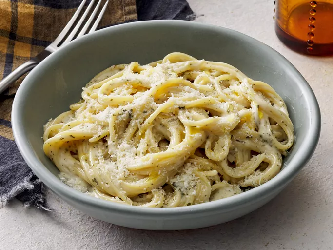

Pasta Recipe

Description
This recipe is for a quick and simple creamy garlic pasta that can be made in only a few steps. This will take about 30 mintues in total to make and will serve four servings
Ingredients
- 2 teaspoons olive oil
- 4 garlic cloves, minced
- 2 tablespoons butter
- 3 cups chicken broth
- 1/2 teaspoon ground black pepper
- 1/4 teaspoon salt
- 1/2 pound spaghetti
- 1 cup grated parmesan cheese
- 3/4 cup heavy cream
- 1 & 1/2 tablespoons dried parsley
Steps
- Heat olive oil in a medium pan over medium heat. Add garlic and stir until fragrant, 1 to 2 minutes. Add butter and stir constantly until melted.
- Pour in 3 cups chicken broth; add pepper and salt. Bring to a boil. Add spaghetti and cook, stirring occasionally, until tender yet firm to the bite, about 12 minutes. Add more chicken broth if pasta starts to stick to the pan.
- Add Parmesan cheese, cream, and parsley and mix until thoroughly combined. Serve immediately.
Back to recpies